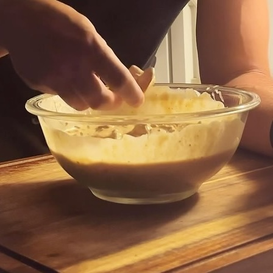

Dip Queso
Ingredientes:
- 2 tazas de requesón bajo en grasa (440g)
- 1/2 taza de queso estilo mexicano rallado (55g)
- 1/2 taza de queso cheddar sin grasa rallado (55g)
- 1/4 taza de jalapeños en rodajas (40g)
- 1/2 taza de leche desnatada (120ml)
- 2 cucharadas de condimento para tacos (15g)
- 1 cucharada de polvo de cheddar (12g)
- 1/2 cucharadita de ajo en polvo
- 1/2 cucharadita de sal
- 8 oz de carne molida 96/4 cocida (225g)
- 1/2 taza de tomates y chiles verdes en cubos (120g)
Instrucciones:
- En una licuadora o procesador de alimentos, combina el requesón bajo en grasa, el queso estilo
mexicano rallado, el queso cheddar sin grasa rallado, los jalapeños en rodajas, la leche desnatada,
el condimento para tacos, el polvo de cheddar, el ajo en polvo y la sal. Mezcla hasta que quede
suave.
- Transfiere la mezcla a una cacerola y calienta a fuego medio hasta que comience a hervir.
- Agrega la carne molida cocida y los tomates con chiles verdes en cubos. Continúa cocinando durante
2-3 minutos más hasta que esté bien caliente.
- Sirve caliente con chips de tortilla de proteínas para un delicioso aperitivo o bocadillo alto en
proteínas.
- Transfiere la mezcla a una cacerola y calienta a fuego medio hasta que comience a hervir.
- Agrega la carne molida cocida y los tomates con chiles verdes en cubos. Continúa cocinando durante
2-3 minutos más hasta que esté bien caliente.
- Sirve caliente con chips de tortilla de proteínas para un delicioso aperitivo o bocadillo alto en
proteínas.